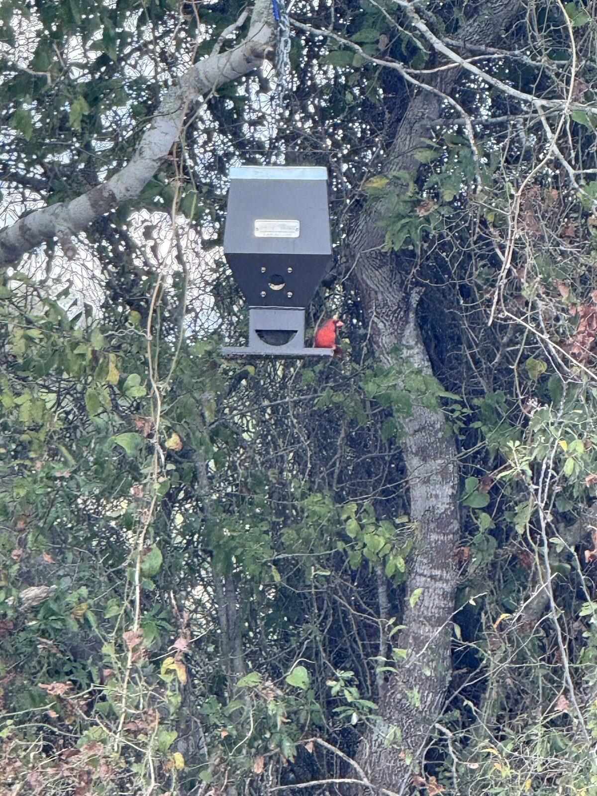
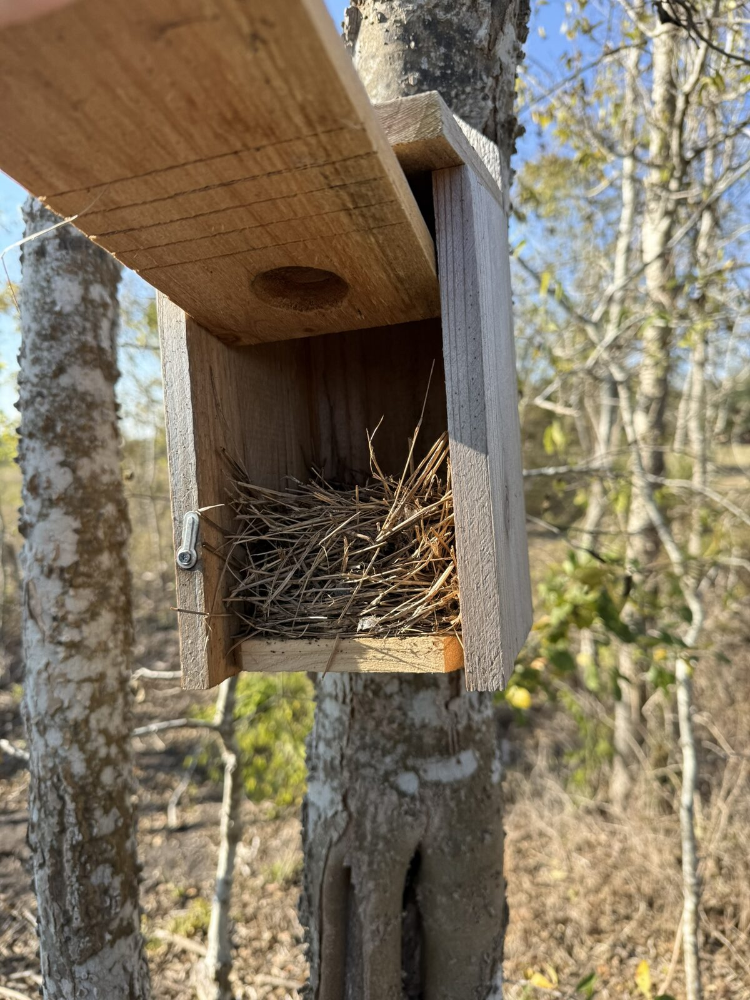
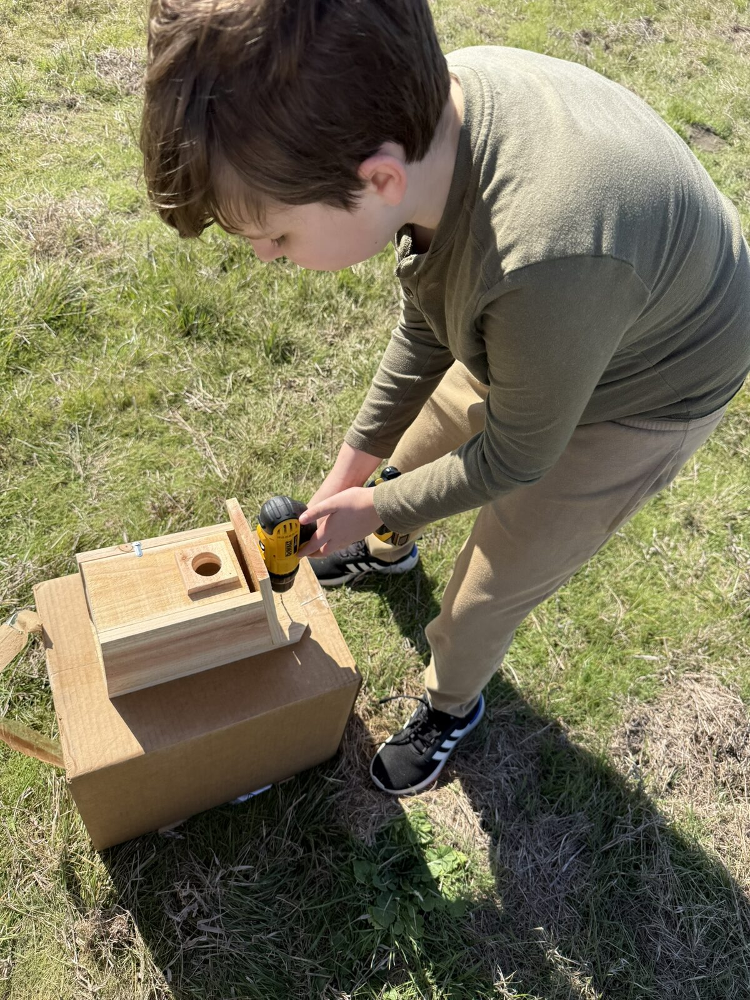
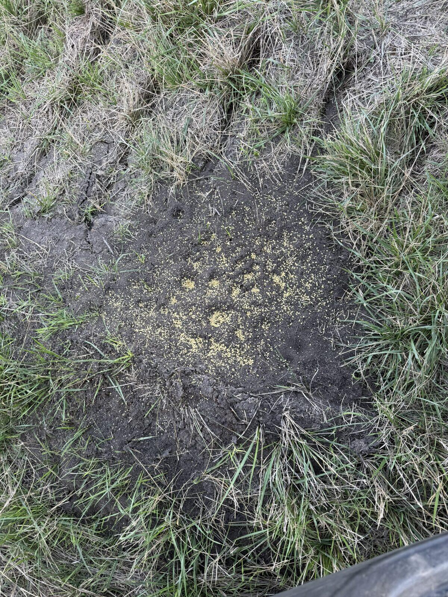
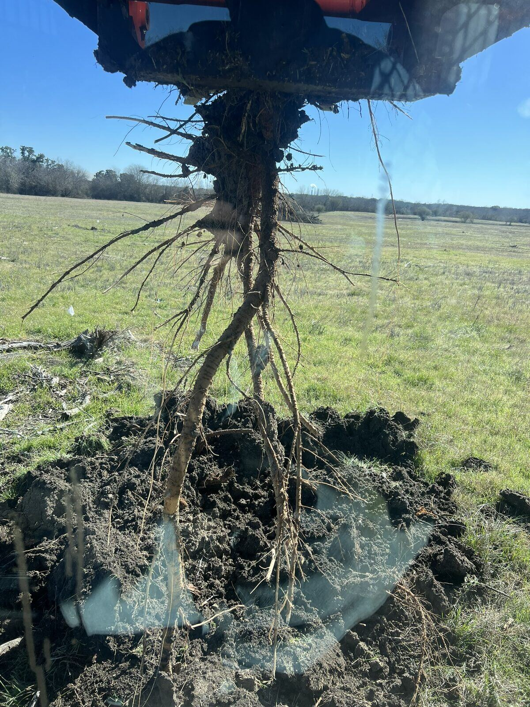

Wildlife Practices on the Fold
When we filed our wildlife management plan in Fayette County, we committed to multiple practices: amoung them were providing bird shelter and food sources, and treating for fire ants. Those commitments did not go away when we decided to raise miniature Highland cattle. They are still part of how we take care of this place.
This is not complicated work, but it is consistent work. Here’s what it looks like on the ground.
Bird Shelter & Feed
We put up simple nest boxes and keep a few feeders going. The boxes get used — you can see the nests when you open them. Cardinals and other birds show up at the feeders regularly. It’s a small thing, but it is one of the clear requirements of the exemption, and it’s satisfying to see the boxes occupied.

A regular visitor at one of the feeders

One of the nest boxes after a season of use

Putting another box together
Fire Ants
Fire ants are a problem on almost every place around here. We treat the mounds with bait as we find them. It’s not glamorous, but it is necessary for livestock, for people walking the pastures, and for the wildlife plan itself.

Fresh bait on an active mound
Huisache
Huisache is aggressive on this soil. Left alone it will take over. We spot-treat smaller plants and dig or pull the larger ones when we can. The root systems on some of these are impressive — and a good reminder of why it is easier to stay ahead of them than to clean up later.

One of the bigger roots we pulled
None of this replaces the cattle. It simply runs alongside them. The plan we filed still calls for the bird work and the fire ant treatment, and we will keep doing both as the fold grows. The land has to work for the animals we raise and for the wildlife commitments we already made. That is the balance we are trying to keep.
— Drew